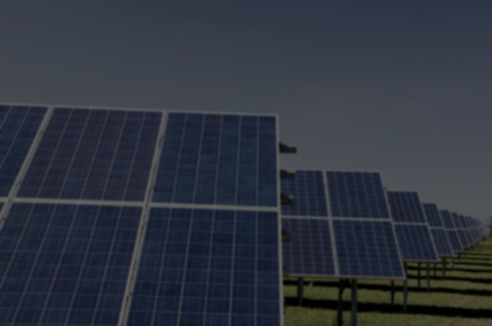

Structure
91.7%
of owners operate exactly one plant. Only 37 of 1,614 operate four or more. A stricter reporting format does not produce better data in a fleet with no monitoring team.

The Chilean generation fleet · Infotécnica, 16 Aug 2026
Findings from our own analysis of the complete Infotécnica registry of the Coordinador Eléctrico Nacional. Reproducible from the source files. No simulated data.
of owners operate exactly one plant. Only 37 of 1,614 operate four or more. A stricter reporting format does not produce better data in a fleet with no monitoring team.
completeness in the coordinated solar technical record — the lowest of any sheet, in the technology that holds 1,375 of the country's 2,029 plants.
PMGD units declare a storage system. The other 975 record "not applicable" across all 31 fields — just as the new framework brings storage into scope with monitoring requirements.
structural errors in the only two storage records that exist: divergent vocabulary, a state-of-charge range of [0%–100%] that no BMS permits, and the word "In Testing" inside a date field.
round-trip efficiency on closed cycles only. Including one unclosed cycle would have returned 87.5% — the same data, a different denominator, and a figure that cannot be defended.
Methodological caveat: some empty fields may be legitimately non-applicable to a given installation. This is a measure of structured information available for automated analysis, not a finding of non-compliance by owners.
The rule that governs every figure
A withheld figure with its reason stated is verifiable. An estimated figure that looks confident is not. A channel that returns nothing is reported as not observed and excluded from the denominator — never as zero.